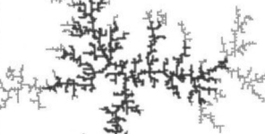

Introduction

Figure 1: Example of a structure formed by Diffusion-Limited Aggregation.Diffusion-Limited Aggregation (DLA) describes the process where randomly moving particles adhere to a growing structure, forming complex, fractal-like patterns. This project will implement a DLA model using cellular automata to explore diffusion and pattern formation.
Task
Your implementation should include a basic DLA model where particles perform a random walk until they attach to an existing structure. Additionally, incorporate at least two of the following features:
- Seed Growth Variation: Experiment with different initial seed configurations, such as a single point, a line, or multiple starting points.
- Adhesion Probability: Introduce probabilistic sticking rules to simulate variations in surface roughness and material properties.
- Directional Bias: Modify the random walk behavior to introduce real-world influences such as gravity, fluid flow, or electromagnetic fields.
- Obstacle Interaction: Place barriers in the simulation space and observe how diffusion patterns adapt to these constraints.
- Multi-Species Aggregation: Extend the model to include multiple types of particles with different sticking behaviors, mimicking complex natural growth processes (e.g., coral reefs or bacterial colonies).
- Custom Feature: Another feature of similar complexity of your choice.
Discussion Points
In your presentation or report, address the following:
- Implementation: Explain how you implemented the basic diffusion and aggregation mechanics, including particle movement and sticking rules.
- Visualization: Provide a visualization of your simulation, preferably as a GIF or video.
- Feature Development: Describe the two (or more) features you chose to implement, discussing your approach and any challenges you faced.
- Observations: Highlight any interesting or unexpected behaviors observed in your simulation, such as pattern self-organization or complex growth structures.
- Parameter Analysis: Analyze how different initial conditions or parameter choices (e.g., adhesion probability, directional bias) affect the resulting structures.
- Real-World Comparison: Discuss how your simulated patterns compare to real-world phenomena such as bacterial growth, electrochemical deposition, or snowflake formation.
- Literature Review: Compare your model to state-of-the-art research in diffusion-limited aggregation and pattern formation.
- Reflection: Share insights gained about cellular automata, diffusion processes, and the emergent properties of simple stochastic rules.